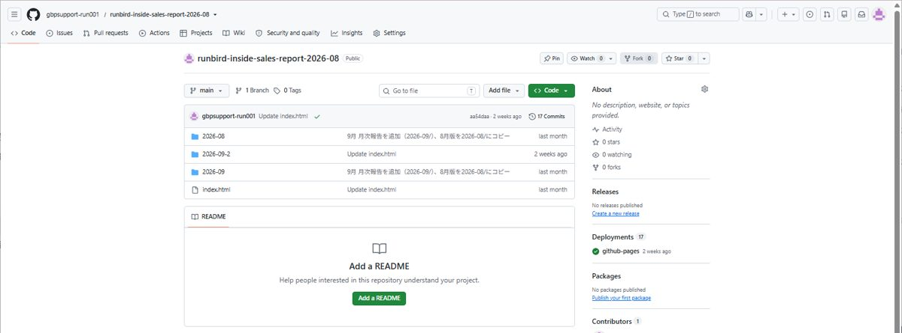
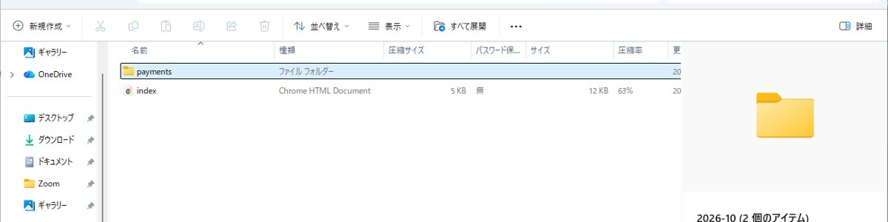
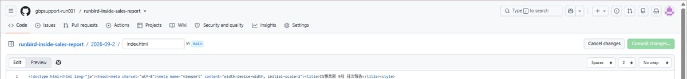
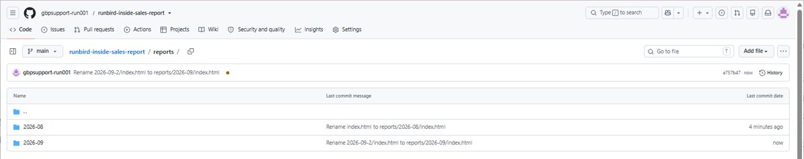
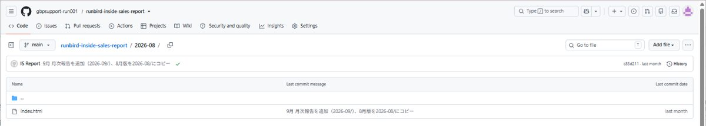

資料づくりの流れと、GitHubでの公開・共同管理の手順をまとめています。GitHubはブラウザだけでできるので、初めてでも大丈夫です。「みんなで気をつけよう」くらいの目安として使ってください。
つくった資料を、GitHub Pagesで公開して、みんなで管理するための手順です。
GitHubは、ファイルを置いておく「倉庫」です。倉庫に置いたHTMLを、GitHub Pagesという機能で、そのままWebページとして公開できます。
例：月次報告の9月分は、次のURLで開きます。index.html は省略できます。
月ごとのフォルダは reports の中にまとめます。月が増えても、いちばん上がごちゃごちゃしません。

reports/ に移動2026-09-2 を reports/2026-09/ に統合新しい資料シリーズを始めるときだけ必要です。すでにあるリポジトリに追加するなら、7へ進んでください。
runbird-inside-sales-report のように長く使える名前にするmain、フォルダを / (root) にして Saveざっくり、「資料を直せる人」と「設定を変えられる人」に分かれます。
資料の更新は、招待されたメンバーなら誰でもできます。設定まわりは管理者に任せる、と覚えておけばOKです。
2026-10）を用意する…/tree/main/reports の状態）2026-10）を、画面にドラッグ＆ドロップする2026-10/index.html や 2026-10/payments/… のように、パスつきで出ているか確認するindex.html を開き、鉛筆アイコン（Edit）で、目次に10月分へのリンクを1行書き足してコミットする（既存の月の行を参考にする）
reports の中を確認しましょう。2026-09-2/index.html → reports/2026-09/index.html（/ を入れると、フォルダが自動で作られます）

消し方は2つあります。

reports/2026-09/ のようにフォルダ名を足すと、各ページのURLになるindex.html という名前になっているか